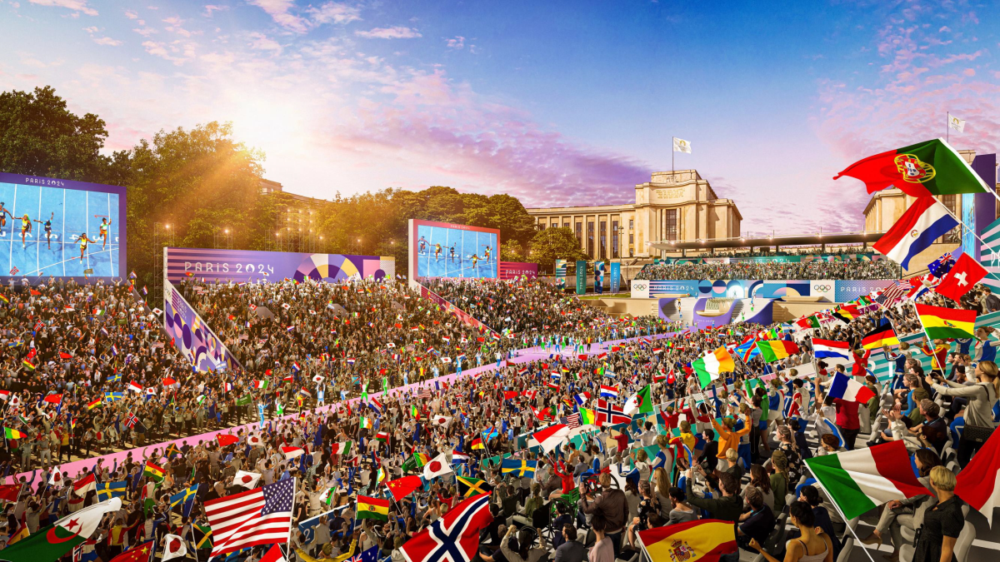

Courrier Olympique


DEBUNKAGE
Dans notre article, nous ne manipulons pas réellement les informations. Cependant, la formulation des phrases rend l’article problématique. De plus, pour écrire notre article nous nous sommes uniquement basées sur des sources venant du site des Jeux olympiques de Paris… Or, on sait que le travail d’un journaliste est de mélanger et croiser les sources.
A l’approche de l’été 2024, le monde tourne son attention vers la France, pays hôte des Jeux Olympique. Alors que les athlètes rivalisent sur le terrain, les spectateurs du monde entier partagent une expérience commune sous le drapeau tricolore, unissant les différentes mœurs françaises.
DEBUNKAGE
Ces phrases mettent un avant un sentiment d’unité et des valeurs idéalisées, cherchant à influencer l'opinion sur la portée sociale des Jeux Olympiques.
Les JO permettent à la France de se distinguer non seulement grâce à sa grandeur mais également grâce à ses valeurs qui lui sont chères. Celles-ci sont d’abord représentées par nos mascottes: Les Phryges. Ces adorables mascottes issues du célèbre bonnet phrygien, symbole de liberté, sont également des ambassadeurs qui incarnent l'esprit olympique et paralympique.
DEBUNKAGE
En utilisant les termes "grandeur" et "valeurs chères" de la France, on essaye de valoriser le plus possible la France afin de renforcer l'image positive du pays.
En qualifiant les mascottes “d’adorables” et en les associant à l’égalité, on vient créer un sentiment d’union ainsi que donner une connotation positive à l’évènement.
Leur présence sur la scène mondiale renforce le message selon lequel le sport est accessible à tous, indépendamment des capacités physiques, et célèbre l'importance de l'égalité dans le domaine sportif.
De manière significative, le choix d'intégrer une représentation paralympique au travers d'une mascotte en situation de handicap est salué par près de 9 Français sur 10 (88%). Ce soutien est encore plus marqué chez les enfants, atteignant un impressionant 93%. Cette démarche renforce l'aspect solidaire des Jeux au sein de la nation, montrant que la France, par le biais de ces mascottes, embrasse la diversité et promeut une vision inclusive du sport.
DEBUNKAGE
L'utilisation de termes comme "de manière significative" et "est salué" montre une appréciation positive du choix d'intégrer une mascotte en situation de handicap, soulignant ainsi les “valeurs Française”. De plus, l'utilisation de l'adjectif "impressionnant" renforce la perception positive du pays et l’idée d’union et d’égalité en mettant en avant le fort niveau d'approbation, notamment chez les enfants.
Ici, la donnée ne sert pas à grand-chose en réalité puisqu’elle ne prouve en rien de l’inclusivité des JO mais plus l’avis positif des Français sur celle-ci. Cependant, le fait qu’il y ait un nombre important de Français qui adhèrent à l’accueil des paralympiques met en avant l’aspect positif de l’organisation de ces jeux. Ainsi, les chiffres servent à renforcer l’idée que la société est en faveur de l'inclusivité et de la diversité et donc mettent en avant la France.
Cette célébration s'étend même au-delà des frontières métropolitaines. Suite à l’ajout de quatre nouveaux sports aux JO, dont le surf, certaines épreuves se dérouleront dans le cadre somptueux de l’île polynésienne Tahiti. Quoi de mieux pour les sportifs que d’avoir le privilège de performer sur les grandes vagues turquoises de l’île, connues des surfeurs professionnels amateurs de sensations fortes?
DEBUNKAGE
Il s'agit d'une question rhétorique. En effet, ici, on insinue qu’il n’y a rien de mieux pour les sportifs que de profiter du cadre exceptionnel qui leur est offert grâce aux JO 2024 organisés par la France. Cette question permet alors d’accorder la vision du lecteur à celle de l’écrivain, qui n’est autre que le fait que tout le monde rêverait d’effectuer son sport préféré dans un cadre paradisiaque.
Ces mêmes vagues sur lesquelles surfaient autrefois les habitants de l'île sous la royauté polynésienne, à l’aide de planches de bois. En plus de ses paysages à couper le souffle, Tahiti est un lieu symbolique où le surf se pratique depuis des siècles. Alors, en mettant en avant la richesse du patrimoine français, les JO 2024 mettent avant tout en lumière l’héritage culturel unique de l’île. Cette intégration souligne la diversité et la richesse culturelle de la France, créant ainsi un lien entre la métropole et ses territoires d'outre-mer, renforçant l'unité et la fierté nationale à l'échelle internationale.
Engagée dans une démarche internationale au nom du sport, Paris 2024 œuvre activement à travers des projets internationaux tels que "Impact 2024 International". L'objectif de cette initiative ambitieuse est d'apporter des améliorations significatives dans les domaines de la santé, de l'égalité des sexes et de l'éducation dans pas moins de 19 pays d'Afrique. Cette portée internationale souligne l'engagement de Paris 2024 envers des valeurs universelles et la promotion du bien-être mondial.
DEBUNKAGE
Nous avons utilisé un effet de cadrage, qui consiste à influencer la perception que le lecteur peut avoir d’une information par la connotation positive ou négative à laquelle elle est associée. Ici, une connotation positive est donnée au nombre de pays Africains aidés par l’initiative. L’expression “pas moins de” amplifie la grandeur du chiffre et donne alors un effet grandiose à l’initiative. En plus, cette donnée montre l’implication très ambitieuse de la France à régler d’importants problèmes (santé, éducation, égalité des sexes) profondément ancrés dans les sociétés des 19 pays Africains concernés par ces mesures depuis des générations. Bien que l’ambition soit bonne, elle est idéalisée car il est impossible pour la France d’apporter autant de changements significatifs et dans autant de pays.
Avec près de 80 000 bénéficiaires directement touchés par ces actions, ce projet se distingue en mettant en lumière des principes fondamentaux tels que l'égalité des sexes.
DEBUNKAGE
En réalité, il n’y a que 77 469 bénéficiaires. Arrondir ce chiffre à 80 000 comme nous l’avons fait permet de tout d’abord de mentir sur le nombre réel de bénéficiaires qui est inférieur, mais aussi de renvoyer une image forte car le chiffre rond de 80 000 qui se rapproche de 100 000. Alors, cela permet de souligner l’impact positif qu’ont les JO sur les individus (ici les bénéficiaires).
Il est particulièrement remarquable que près de la moitié des personnes bénéficiant de ces initiatives soient des femmes, soulignant ainsi l'accent mis sur l'autonomisation et l'inclusion.
DEBUNKAGE
Ce chiffre est bien évidemment manipulé. En effet, la moitié de la population sont des femmes, ainsi il est spécifié que la moitié des bénéficiaires sont des femmes pour manipuler les opinions publique afin de s'aligner à des valeurs égalitaires.
L'investissement substantiel de 1,4 million d'euros dans ce projet démontre l'engagement financier sérieux de Paris 2024 en faveur de ces causes humanitaires. Au-delà des frontières, cette contribution significative envoie un message puissant au reste du monde, soulignant la nécessité d'une approche cohésive dans le domaine du sport pour promouvoir des valeurs humanitaires et contribuer à un changement positif à l'échelle mondiale. En mettant l'accent sur la cohésion sportive, Paris 2024 cherche à inspirer et à catalyser des transformations durables qui vont au-delà de l'événement sportif en lui-même.

DEBUNKAGE
Cette image est fictive. En effet, elle présente une scène qui ne s'est même pas encore déroulée. Sur l’image on peut apercevoir un cadre utopique avec le beau levé du soleil et les nombreux drapeaux montrant la diversité des Jeux Olympiques. Cette image vient donc renforcer l’idée d'unité de l'événement et donc mettre en avant les valeurs de la France en présentant le pays comme un pays inclusif, ouvert à la diversité, et résolument engagé dans la promotion de l'égalité et de la solidarité à travers les Jeux Olympiques. Une petite précision est également apportée dans la légende de cette photo, avec la mention de la Tour Eiffel pour situer le parc, ce qui insiste sur le cadre idyllique du lieu.